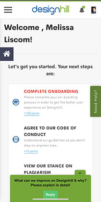
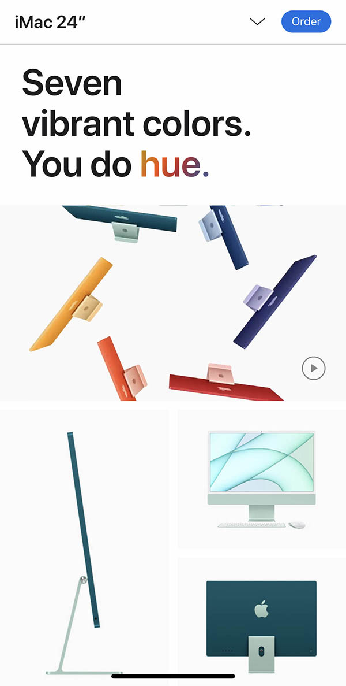

Alignment
Dreaming Tree
3Dsvg.com
I really enjoy the alignment in this site. This layout reminded me of how the example for our assignment was set up. Everything is evenly spaced including the side margins. All the margins in this section of the website clean and appropriate for the content.
Repetition
Design Hill
Designhill.com
The main repeating detail that I really like in this site is the repeating use of color. The colors that are used in their logo are repeated throughout the site. Tying the whole site together. I really like when companies do this. It makes it easier to visually see when you navigate away from their site.
White Space and Clear Design
Apple
Apple.com
I feel that the Apple website overall, uses white space very well. The page on the new colored iMacs is an awesome example of this. You would think that a website advertising new more colorful products would not have a lot of white space. The large amount of white space in this particular site actually puts an emphasis on the color. The white space around each item is consistent and appropriate for the content. For example, the space between each image is the same on the top and bottom as well as the sides. The images themselves also use a good amount of negative space. All these elements combined create a very clean website.